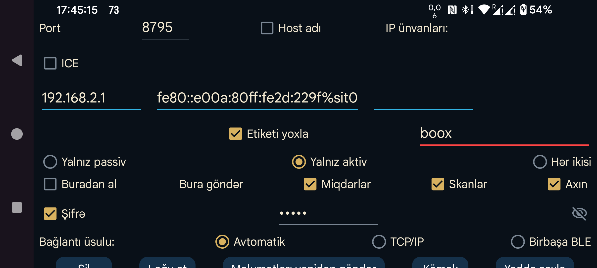

ar az be de es fa fr hi it ja ko nl pl pt ru sv tr uk uz zh en
Digər qurğuda işləyən Juggluco ilə bağlantı qurun. Bir qurğudakı Juggluco məlumatları IP/TCP vasitəsilə digər qurğudakı Juggluco-ya göndərir. Bağlantı üçün tətbiqlərdən biri müəyyən portda gələn əlaqələri dinləməli, digəri həmin porta qoşulmalıdır. Bu Juggluco-nun dinlədiyi port əvvəlki ekranda (ortanın solundakı menyu → Güzgü) göstərilir. Burada isə bu tətbiq aktiv şəkildə bağlantı yaratdıqda qoşulacağı uzaq portu təyin edirsiniz.
Bu qurğu daxil olan bağlantıları dinləyə bilmirsə, Yalnız aktiv seçin. Digər tərəf dinləyə bilmirsə, Yalnız passiv seçin. Əks halda Hər ikisi işarəli qalsın. Qarşı tərəfdə tamamlayıcı seçim təyin olunmalıdır: burada Yalnız aktiv seçilirsə, orada Yalnız passiv; burada Yalnız passiv seçilirsə, orada Yalnız aktiv; burada Hər ikisi seçilirsə, qarşı tərəfdə də Hər ikisi olmalıdır.
Bu Juggluco bağlantını aktiv şəkildə başladırsa, qoşulacağı IP ünvanını və ya ünvanlarını göstərin. Eyni qurğunun bir neçə IP ünvanı varsa, hamısını daxil edə bilərsiniz. Məsələn, iki qurğu bəzən ev şəbəkəsi, bəzən də mobil qaynar nöqtə vasitəsilə birbaşa birləşirsə, IP ünvanları fərqli ola bilər.
DİQQƏT: Heç vaxt bir neçə fərqli qurğunun IP ünvanını eyni bağlantıya daxil etməyin. Əks halda hər bir qurğu məlumatın yalnız bir hissəsini alacaq.
Host adı: IP ünvanları əvəzinə bir host adı daxil edin. Belə halda bağlantı ad serverindən (DNS) asılı olur, bir qədər yavaşlaya və DNS xətalarından təsirlənə bilər. Bunu yalnız sabit IP təyin etmək mümkün olmadıqda və host adı dəyişən IP-yə avtomatik bağlandıqda aktiv edin.
Yalnız aktiv rejimi istisna olmaqla, Aşkar et seçilə bilər. Bu halda Juggluco ilk dəfə qoşulan qarşı tərəfin IP ünvanını yadda saxlayır. Doğru qurğunun qoşulduğunu iki üsulla yoxlaya bilərsiniz: IP-ni yoxla IP ünvanını yoxlayır; Etiketi yoxla isə yalnız hər iki tərəfdə eyni etiket daxil edildikdə bağlantı qurmağa imkan verir.
Bu tətbiq digər Juggluco-nun Güzgü surəti kimi işləməlidirsə, Buradan al seçimini aktiv edin. Bu qurğu məlumat göndərəcəksə, hansı növlərin göndəriləcəyini göstərin:
Bəzən məlumatların müəyyən hissəsi qəbul edən qurğuda artıq mövcud olur. Məlumatın hansı vaxta qədər mövcud olduğunu göstərə bilərsiniz:
Mövcud bağlantıya yeni məlumat növü əlavə etdikdə başlanğıc tarixi yalnız həmin yeni növə aiddir. Məsələn, Skanlar və Axın artıq göndərilirsə və Miqdarları sonradan əlavə edirsinizsə, tarix yalnız göndəriləcək Miqdarlara təsir edir.
İki qurğu təhlükəsiz olmayan şəbəkədə qoşulursa, bağlantının hər iki tərəfində eyni, ən çox 16 simvolluq şifrə təyin etməklə məlumatları imzalayıb şifrələyə bilərsiniz. Tənzimləmələri saxlamaq üçün Yadda saxla seçin.
Bağlantı üsulu: Ev şəbəkəsində TCP/IP, Mesajlar və Birbaşa BLE üsullarından istifadə etmək olar. Mesajlar telefonla Wear OS saatı arasında istifadə olunur və Google Play xidmətləri ilə saatın qoşalaşdırıcı tətbiqi vasitəsilə dolayı yolla Bluetooth-dan istifadə edir. Avtomatik seçildikdə üsullar bu ardıcıllıqla sınanır: TCP/IP, Mesajlar, Birbaşa BLE.
Sil bağlantı tənzimləmələrini silir.
QR: QR kodunu digər qurğuda skan etməklə bağlantının qarşı tərəfini yaradır.
Ən sadə halda hər iki qurğu eyni ev şəbəkəsindədir və yerli IP ünvanlarından istifadə etmək olar. İnternet üzərindən Wi-Fi ilə də qoşulmaq mümkündür. Bu zaman modeminizin təlimatına uyğun olaraq xarici portu ev şəbəkəsindəki qurğunun IP ünvanına və portuna yönləndirməlisiniz.
Mobil internetə qoşulmuş iki smartfonun birbaşa əlaqəsi üçün onlardan ən azı biri şəbəkə portunda gələn bağlantıları dinləyə bilməlidir. Heç biri bunu edə bilmirsə (məsələn, ayrı-ayrı ictimai IP ünvanları yoxdursa), üçüncü qurğu vasitəsilə əlaqə qurmaq olar. Variantlardan biri internetə modemlə qoşulmuş ev qurğusunda Juggluco (ən azı Android 4.4) işlətməkdir. Digər variant kompüterdə (şəxsi kompüter və ya Amazon AWS) Juggluco-nun komanda sətri proqramını işlətməkdir: komanda sətri versiyası.
Port yönləndirməsi üzrə təlimatlar:
NFC olmayan qurğuda Bluetooth vasitəsilə qlükoza almaq: ətraflı təlimat. Sensoru NFC olan qurğuda başladın, sonra Skanlar və Axın məlumatlarını NFC olmayan qurğuya göndərin. Ardınca Axın məlumatları üçün bağlantının istiqamətini tərsinə çevirin; NFC olan qurğuda Bluetooth-u və Bluetooth vasitəsilə sensor seçimini söndürün, NFC olmayan qurğuda isə aktiv edin. Beləcə, bir qurğuda skan edib digər qurğuda Bluetooth göstəriciləri ala bilərsiniz.
Vacib: Bütün qurğularda sensorla bağlı bütün məlumatlar olmalıdır. Qurğular məlumat mübadiləsi edirsə, həm Skanlar, həm də Axın məlumatlarını mütləq almalıdırlar. Buna görə Axın məlumatlarını NFC olan qurğuya, Skan məlumatlarını isə NFC olmayan qurğuya geri göndərin. Əks halda məlumatların sinxronluğu pozular, köhnə autentifikasiya məlumatları istifadə edilə və ya yeni məlumatların üzərinə köhnələri yazıla bilər. Miqdarlar məlumatı bunlardan tamamilə müstəqildir.
ICE (Interactive Connectivity Establishment) port yönləndirməsi qurmadan iki Juggluco arasında bağlantı yaratmağın başqa üsuludur. Əksər hallarda iki telefon server vasitəçiliyi olmadan birbaşa qoşulur. Bəzən bu mümkün olmur və TURN serveri tələb edilir. Onu ortanın solundakı menyu → Güzgü → TURN serveri bölməsində göstərə bilərsiniz. Digər hallarda serverlər yalnız telefonları bir-biri ilə əlaqələndirmək üçün lazımdır.
Bunun üçün hər iki tərəfdə eyni olan, lakin başqa Juggluco istifadəçiləri ilə paylaşılmayan ICE etiketi daxil edilməlidir. Bir tərəfdə 0, o biri tərəfdə 1 seçilməlidir. Bundan əlavə, hər iki tərəfdə eyni olan adi bağlantı etiketi də lazımdır; onun yalnız həmin telefonlar arasında unikal olması kifayətdir. Hər şeyi əl ilə daxil etmək əvəzinə ortanın solundakı menyu → Güzgü → Avtomatik QR ilə bağlantı yaradıb qarşı tərəfdə QR kodunu skan edə bilərsiniz.
Bağlantının hər iki tərəfində tənzimləmələr ciddi şəkildə bir-birini tamamlamalıdır. Bir kiçik çatışmazlıq belə məlumat ötürülməsini mümkünsüz edə bilər.
Bəzən bağlantı donur və Wi-Fi-ni söndürüb-aktiv etməklə və ya Sinxronlaşdır düyməsinə basmaqla bərpa olunur. Yalnız aktiv/Yalnız passiv rejimlərini Hər ikisi ilə dəyişmək (və ya əksinə) də kömək edə bilər.
Şəbəkə dəyişdikcə IP ünvanlarının da dəyişdiyini nəzərə alın. Məsələn, ev şəbəkəsində və mobil qaynar nöqtə üzərindən qoşularkən fərqli ünvanlar tələb oluna bilər.